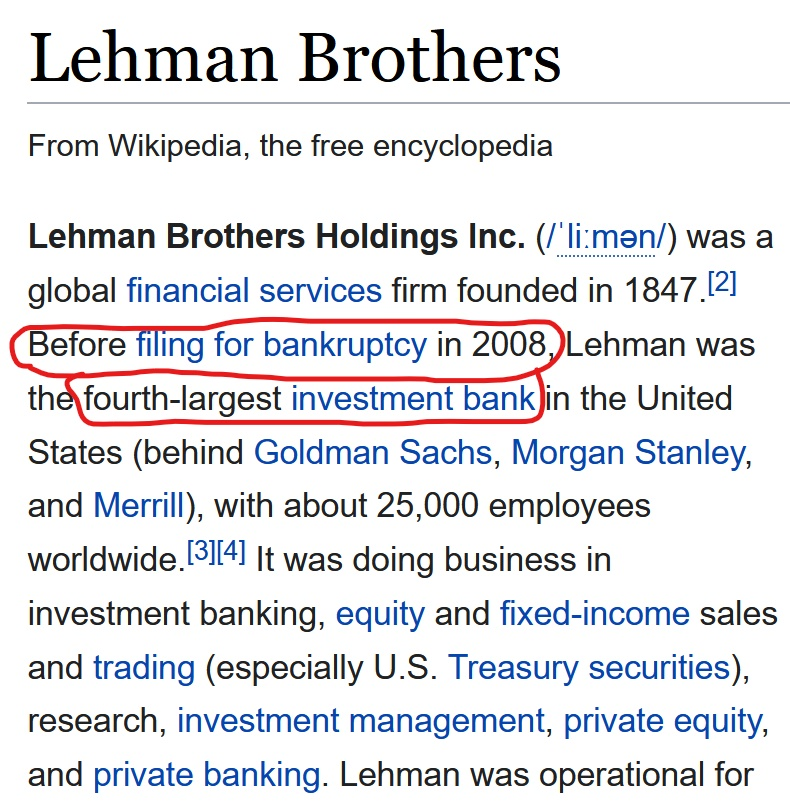
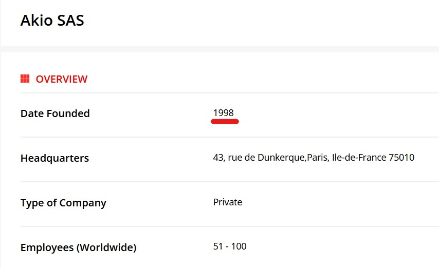
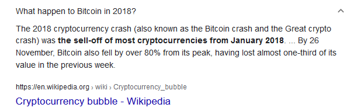
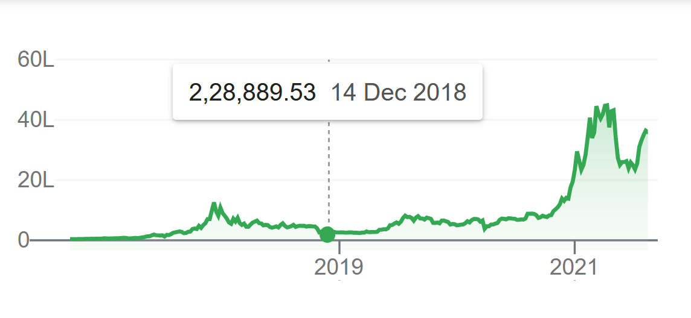

Authentic Proofs
 The image itself shows many signs of the rise of digital payments and links to Satoshi Nakamoto -
The image itself shows many signs of the rise of digital payments and links to Satoshi Nakamoto -
Starting from the above four line which are barely visible and hardly someone reads -
Line 1 - Can Britain Keep Booming -> Pointing to the Great Financial Crisis in 2008.
Line 3 - Investment Banks Pull Back -> Points to the Lehman Brothers.

Line 2 - Takeshita Comes In Town -> Takeshita was Prime minister of Japan from 1987-89. Also Takeshita refers to the one who lives beneath bamboo can be coined as the one that doesn't show up may be it here refers to Satoshi Nakamoto.
Line 4 - Perestroika's First Test -> Perestroika was a Political movement in Russia but it had ended in 1991 and if we see the backward message we can coin the word Akio. It was a software based company, intresting fact is that it was established in 1998 the year this page was published....

As we know Rising Phoenix point to the rise after death also it is wearing the neckles of a digital coin on which we can clearly see the year 2018 printed. Here we see it shows the two deaths
1. The death of Fiat Currency and the rise of digital.
2. The death of the Bitcoin and rising again.

And after 2018 rise there was no such crash

Finaly we can see the The main heading "Get Ready For A World Currency" which shows the motives of "The New World Order".